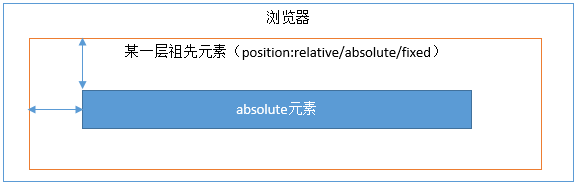

<!DOCTYPE html>
<html>
<head><meta name="generator" content="Hexo 3.8.0">
  <meta charset="utf-8">
  

  
  <title>css中的position属性 | Gzqqqqq</title>
  <meta name="viewport" content="width=device-width, initial-scale=1, maximum-scale=1">
  
  
  
  <meta name="description" content="position一共有四个可选属性：static/relative/absolute/fixed。其中static（静态定位）是默认值，即所有的元素如果不设置其他的position值，它的position值就是static，有它跟没有它一样。 relative的定位relative元素的定位永远是相对于元素自身位置的，和其他元素没关系，也不会影响其他元素。 fixed的定位fixed元素的定位永远">
<meta name="keywords" content="css">
<meta property="og:type" content="article">
<meta property="og:title" content="css中的position属性">
<meta property="og:url" content="http://Gzqqqqq.github.io/public/2019/03/30/css中的position属性/index.html">
<meta property="og:site_name" content="Gzqqqqq">
<meta property="og:description" content="position一共有四个可选属性：static/relative/absolute/fixed。其中static（静态定位）是默认值，即所有的元素如果不设置其他的position值，它的position值就是static，有它跟没有它一样。 relative的定位relative元素的定位永远是相对于元素自身位置的，和其他元素没关系，也不会影响其他元素。 fixed的定位fixed元素的定位永远">
<meta property="og:locale" content="default">
<meta property="og:image" content="http://gzqqqqq.github.io/public/2019/03/30/css中的position属性/css1.png">
<meta property="og:image" content="http://gzqqqqq.github.io/public/2019/03/30/css中的position属性/css2.png">
<meta property="og:image" content="http://gzqqqqq.github.io/public/2019/03/30/css中的position属性/css3.png">
<meta property="og:image" content="http://gzqqqqq.github.io/public/2019/03/30/css中的position属性/css4.png">
<meta property="og:image" content="http://gzqqqqq.github.io/public/2019/03/30/css中的position属性/1.1.png">
<meta property="og:image" content="http://gzqqqqq.github.io/public/2019/03/30/css中的position属性/1.2.png">
<meta property="og:image" content="http://gzqqqqq.github.io/public/2019/03/30/css中的position属性/1.3.png">
<meta property="og:image" content="http://gzqqqqq.github.io/public/2019/03/30/css中的position属性/2.1.png">
<meta property="og:image" content="http://gzqqqqq.github.io/public/2019/03/30/css中的position属性/2.2.png">
<meta property="og:updated_time" content="2019-03-30T05:23:53.672Z">
<meta name="twitter:card" content="summary">
<meta name="twitter:title" content="css中的position属性">
<meta name="twitter:description" content="position一共有四个可选属性：static/relative/absolute/fixed。其中static（静态定位）是默认值，即所有的元素如果不设置其他的position值，它的position值就是static，有它跟没有它一样。 relative的定位relative元素的定位永远是相对于元素自身位置的，和其他元素没关系，也不会影响其他元素。 fixed的定位fixed元素的定位永远">
<meta name="twitter:image" content="http://gzqqqqq.github.io/public/2019/03/30/css中的position属性/css1.png">
  
    <link rel="alternate" href="/atom.xml" title="Gzqqqqq" type="application/atom+xml">
  
  
    <link rel="icon" href="/images/default-avatar.jpeg">
  
  
    <link href="//fonts.googleapis.com/css?family=Source+Code+Pro" rel="stylesheet" type="text/css">
  
  <link rel="stylesheet" href="/css/style.css">
  <link rel="stylesheet" href="/css/highlight.css">
</head>
</html>
<body>
  <div id="fullpage" class="mobile-nav-right">
    
      <div id="wrapper" title="图片来自网络">
    
    
      <header id="header">
  <div id="nav-toggle" class="nav-toggle"></div>
  <div class="head-box global-width">
    <nav class="nav-box nav-right">
      
        <a class="nav-item" href="/" title>首页</a>
      
        <a class="nav-item" href="/archives" title>归档</a>
      
    </nav>
  </div>
</header>
      <div id="middlecontent" title class="global-width sidebar-right">
        <section id="main"><article id="post-css中的position属性" class="article global-container article-type-post" itemscope itemprop="blogPost">
  
    <header class="article-header">
      
  
    <h1 class="article-title" itemprop="name">
      css中的position属性
    </h1>
  

    </header>
  
  <div class="article-meta">
    <a href="/2019/03/30/css中的position属性/" class="article-date">
  <time datetime="2019-03-30T05:16:09.000Z" itemprop="datePublished">2019-03-30</time>
</a>
    
    
  <ul class="article-tag-list"><li class="article-tag-list-item"><a class="article-tag-list-link" href="/tags/css/">css</a></li></ul>

  </div>
  
    <span id="busuanzi_container_page_pv">
      本文总阅读量<span id="busuanzi_value_page_pv"></span>次
    </span>
  

  <div class="article-inner">
    
    <div class="article-content article-content-doorframe" itemprop="articleBody">
      
       
  	
  	  <p>position一共有四个可选属性：static/relative/absolute/fixed。其中static（静态定位）是默认值，即所有的元素如果不设置其他的position值，它的position值就是static，有它跟没有它一样。</p>
<h3 id="relative的定位"><a href="#relative的定位" class="headerlink" title="relative的定位"></a>relative的定位</h3><h4 id="relative元素的定位永远是相对于元素自身位置的，和其他元素没关系，也不会影响其他元素。"><a href="#relative元素的定位永远是相对于元素自身位置的，和其他元素没关系，也不会影响其他元素。" class="headerlink" title="relative元素的定位永远是相对于元素自身位置的，和其他元素没关系，也不会影响其他元素。"></a>relative元素的定位永远是相对于元素自身位置的，和其他元素没关系，也不会影响其他元素。</h4><p></p>
<h3 id="fixed的定位"><a href="#fixed的定位" class="headerlink" title="fixed的定位"></a>fixed的定位</h3><h4 id="fixed元素的定位永远是相对于浏览器边界的，和其他元素没有关系。但是它具有破坏性，会导致其他元素位置的变化。"><a href="#fixed元素的定位永远是相对于浏览器边界的，和其他元素没有关系。但是它具有破坏性，会导致其他元素位置的变化。" class="headerlink" title="fixed元素的定位永远是相对于浏览器边界的，和其他元素没有关系。但是它具有破坏性，会导致其他元素位置的变化。"></a>fixed元素的定位永远是相对于浏览器边界的，和其他元素没有关系。但是它具有破坏性，会导致其他元素位置的变化。</h4><p></p>
<h3 id="absolute的定位"><a href="#absolute的定位" class="headerlink" title="absolute的定位"></a>absolute的定位</h3><h4 id="如果为absolute设置了top、left，浏览器会递归查找该元素的所有父元素，如果找到一个设置了position-relative-absolute-fixed的元素，就以该元素为基准定位，如果没找到，就以浏览器边界定位。如下两个图所示："><a href="#如果为absolute设置了top、left，浏览器会递归查找该元素的所有父元素，如果找到一个设置了position-relative-absolute-fixed的元素，就以该元素为基准定位，如果没找到，就以浏览器边界定位。如下两个图所示：" class="headerlink" title="如果为absolute设置了top、left，浏览器会递归查找该元素的所有父元素，如果找到一个设置了position:relative/absolute/fixed的元素，就以该元素为基准定位，如果没找到，就以浏览器边界定位。如下两个图所示："></a>如果为absolute设置了top、left，浏览器会递归查找该元素的所有父元素，如果找到一个设置了position:relative/absolute/fixed的元素，就以该元素为基准定位，如果没找到，就以浏览器边界定位。如下两个图所示：</h4><p><br></p>
<h3 id="relative特点"><a href="#relative特点" class="headerlink" title="relative特点"></a>relative特点</h3><p><br><br><br>1.relative会导致自身位置的相对变化，而不会影响其他元素的位置、大小的变化。</p>
<p>2.relative产生一个新的定位上下文</p>
<h3 id="absolute特点"><a href="#absolute特点" class="headerlink" title="absolute特点"></a>absolute特点</h3><p><br></p>
<ol>
<li><p>absolute元素脱离了文档结构。和relative不同，其他三个元素的位置重新排列了。只要元素会脱离文档结构，它就会产生破坏性，导致父元素坍塌。（此时你应该能立刻想起来，float元素也会脱离文档结构）</p>
</li>
<li><p>absolute元素具有“包裹性”。之前p标签的宽度是撑满整个屏幕的，而此时p标签的宽度刚好是内容的宽度。</p>
</li>
<li><p>absolute元素具有“跟随性”。虽然absolute元素脱离了文档结构，但是它的位置并没有发生变化，还是老老实实的呆在它原本的位置，因为我们此时没有设置top、left的值。</p>
</li>
<li><p>absolute元素会悬浮在页面上方，会遮挡住下方的页面内容。</p>
</li>
<li><p>设置absolute会使得inline元素被“块”化。</p>
</li>
<li><p>设置absolute会使得元素已有的float失效。</p>
</li>
<li><p>absolute会使元素悬浮在页面之上，且“后来者居上”。</p>
</li>
</ol>

  	
  
</div>
    
      <footer class="article-footer">
        完
      </footer>
    
  </div>
  
    
<nav id="article-nav">
  <div class="article-nav-block">
    
      <a href="/2019/03/30/从原型到原型链再到继承/" id="article-nav-newer" class="article-nav-link-wrap">
        <strong class="article-nav-caption"></strong>
        <div class="article-nav-title">
          
            从原型到原型链再到继承
          
        </div>
      </a>
    
  </div>
  <div class="article-nav-block">
    
      <a href="/2019/03/29/正则表达式RegExp/" id="article-nav-older" class="article-nav-link-wrap">
        <div class="article-nav-title">正则表达式RegExp</div>
        <strong class="article-nav-caption"></strong>
      </a>
    
  </div>
</nav>

    
<div id="gitmentContainer"></div>
<link rel="stylesheet" href="https://imsun.github.io/gitment/style/default.css">
<script src="https://imsun.github.io/gitment/dist/gitment.browser.js"></script>
<script>
var gitment = new Gitment({
  owner: '',
  repo: '',
  oauth: {
    client_id: '',
    client_secret: '',
  },
})
gitment.render('gitmentContainer')
</script>

  
  
</article>
</section>
        <aside id="sidebar">
  
    <div class="widget-box">
  <div class="avatar-box">
    
    <h3 class="avatar-name">
      
        椿去湫来
      
    </h3>
    <p class="avatar-slogan">
      如果有来生，我要做一棵树，站成永恒，没有悲欢的姿势。
    </p>
  </div>
</div>


  
    

  
    
  <div class="widget-box">
    <h3 class="widget-title">Tags</h3>
    <div class="widget">
      <ul class="tag-list"><li class="tag-list-item"><a class="tag-list-link" href="/tags/Cookie/">Cookie</a></li><li class="tag-list-item"><a class="tag-list-link" href="/tags/DOM/">DOM</a></li><li class="tag-list-item"><a class="tag-list-link" href="/tags/Session/">Session</a></li><li class="tag-list-item"><a class="tag-list-link" href="/tags/css/">css</a></li><li class="tag-list-item"><a class="tag-list-link" href="/tags/git/">git</a></li><li class="tag-list-item"><a class="tag-list-link" href="/tags/javascript/">javascript</a></li><li class="tag-list-item"><a class="tag-list-link" href="/tags/node/">node</a></li><li class="tag-list-item"><a class="tag-list-link" href="/tags/vue/">vue</a></li><li class="tag-list-item"><a class="tag-list-link" href="/tags/样例/">样例</a></li><li class="tag-list-item"><a class="tag-list-link" href="/tags/正则表达式/">正则表达式</a></li><li class="tag-list-item"><a class="tag-list-link" href="/tags/私人/">私人</a></li></ul>
    </div>
  </div>


  
    
  <div class="widget-box">
    <h3 class="widget-title">Tag Cloud</h3>
    <div class="widget tagcloud">
      <a href="/tags/Cookie/" style="font-size: 10px;">Cookie</a> <a href="/tags/DOM/" style="font-size: 10px;">DOM</a> <a href="/tags/Session/" style="font-size: 10px;">Session</a> <a href="/tags/css/" style="font-size: 15px;">css</a> <a href="/tags/git/" style="font-size: 10px;">git</a> <a href="/tags/javascript/" style="font-size: 20px;">javascript</a> <a href="/tags/node/" style="font-size: 10px;">node</a> <a href="/tags/vue/" style="font-size: 10px;">vue</a> <a href="/tags/样例/" style="font-size: 10px;">样例</a> <a href="/tags/正则表达式/" style="font-size: 10px;">正则表达式</a> <a href="/tags/私人/" style="font-size: 10px;">私人</a>
    </div>
  </div>

  
    
  <div class="widget-box">
    <h3 class="widget-title">Archives</h3>
    <div class="widget">
      <ul class="archive-list"><li class="archive-list-item"><a class="archive-list-link" href="/archives/2019/04/">April 2019</a></li><li class="archive-list-item"><a class="archive-list-link" href="/archives/2019/03/">March 2019</a></li></ul>
    </div>
  </div>

  
    
  <div class="widget-box">
    <h3 class="widget-title">Recent Posts</h3>
    <div class="widget">
      <ul>
        
          <li>
            <a href="/2019/04/01/Session/">Session</a>
          </li>
        
          <li>
            <a href="/2019/04/01/Cookie/">Cookie</a>
          </li>
        
          <li>
            <a href="/2019/04/01/原生ajax请求过程/">原生ajax请求过程</a>
          </li>
        
          <li>
            <a href="/2019/04/01/详解call、apply、bind/">详解call、apply、bind</a>
          </li>
        
          <li>
            <a href="/2019/03/31/闭包/">闭包</a>
          </li>
        
      </ul>
    </div>
  </div>

  
</aside>
      </div>
      <footer id="footer">
  <div class="foot-box global-width">
    &copy; 2019 Gzqqqqq &nbsp;&nbsp;
    Powered by <a href="http://hexo.io/" target="_blank">Hexo</a>
    &nbsp;|&nbsp;主题 <a href="https://github.com/yiluyanxia/hexo-theme-antiquity">antiquity</a>
    <br>
    <script async src="//busuanzi.ibruce.info/busuanzi/2.3/busuanzi.pure.mini.js"></script>
    <span id="busuanzi_container_site_pv">阁下是第<span id="busuanzi_value_site_pv"></span>个访客</span>
  </div>
</footer>
      <script src="//ajax.googleapis.com/ajax/libs/jquery/2.0.3/jquery.min.js"></script>

<script src="/js/jquery-2.0.3.min.js"></script>

  <link rel="stylesheet" href="/fancybox/jquery.fancybox.css">
  <script src="/fancybox/jquery.fancybox.pack.js"></script>


<script src="/js/script.js"></script>


    </div>
    <nav id="mobile-nav" class="mobile-nav-box">
  <div class="mobile-nav-img mobile-nav-top"></div>
  
    <a href="/" class="mobile-nav-link">首页</a>
  
    <a href="/archives" class="mobile-nav-link">归档</a>
  
  <div class="mobile-nav-img  mobile-nav-bottom"></div>
</nav>    
  </div>
</body>
</html>